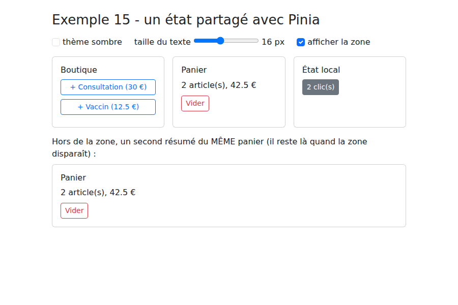
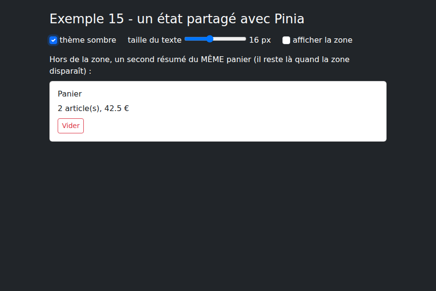

5. L'état partagé
5.1. Exemple 15 : un état partagé avec Pinia
Dans une application, certaines données intéressent de nombreux composants : l'utilisateur connecté, le panier... L'exemple 11 les partageait avec [provide] / [inject], l'exemple 14 avec une [ref] de module. [Pinia], la bibliothèque officielle de [Vue.js] pour l'état partagé, organise cela en stores (magasins), et les rend visibles dans l'extension [Vue.js devtools].
On l'installe dans [main.ts] :
| // =========================================================================
// 15-pinia/src/main.ts
// -------------------------------------------------------------------------
// app.use(createPinia()) : on installe Pinia, la bibliothèque officielle de
// gestion d'état PARTAGÉ de Vue.js. Les "stores" (magasins) qu'on définit
// ensuite sont accessibles depuis n'importe quel composant.
// =========================================================================
import { createApp } from 'vue';
import { createPinia } from 'pinia';
import 'bootstrap/dist/css/bootstrap.min.css';
import App from './App.vue';
createApp(App).use(createPinia()).mount('#app');
|
Un premier store, le panier :
| // =========================================================================
// 15-pinia/src/stores/panier.ts - un STORE Pinia
// -------------------------------------------------------------------------
// defineStore('panier', () => { ... }) : un store écrit comme un composable
// (style "setup") :
// - les ref sont l'ÉTAT du store ;
// - les computed, ses GETTERS (valeurs calculées) ;
// - les fonctions, ses ACTIONS (ce qui modifie l'état).
// Différence avec un composable (exemple 11) : le store n'existe qu'en UN
// exemplaire pour toute l'application. Tous les composants qui appellent
// usePanierStore() reçoivent le MÊME panier. Il vit tant que l'application
// vit : il survit au retrait d'un composant... mais pas au rechargement de
// la page (F5), qui relance l'application.
// =========================================================================
import { computed, ref } from 'vue';
import { defineStore } from 'pinia';
export interface Article {
libelle: string;
prix: number;
}
export const usePanierStore = defineStore('panier', () => {
const articles = ref<Article[]>([]);
const nombre = computed(() => articles.value.length);
const total = computed(() => articles.value.reduce((s, a) => s + a.prix, 0));
function ajouter(article: Article): void {
articles.value.push(article);
}
function vider(): void {
articles.value = [];
}
// tout ce qui est renvoyé fait partie du store
return { articles, nombre, total, ajouter, vider };
});
|
- lignes 24-39 : [defineStore(nom, fonction)] définit un store dans le style « setup », comme un composable : les [ref] sont son état, les [computed] ses getters, les fonctions ses actions ; il expose ce que la fonction renvoie ;
- la différence avec un composable : le store n'existe qu'en un exemplaire pour toute l'application. Tous les composants qui appellent [usePanierStore()] reçoivent le MÊME panier. Il vit tant que l'application vit : il survit au retrait d'un composant... mais pas au rechargement de la page (F5), qui relance l'application.
Un second store survit, lui, au rechargement :
| // =========================================================================
// 15-pinia/src/stores/preferences.ts - un store qui survit à F5
// -------------------------------------------------------------------------
// Pour qu'une donnée survive au rechargement de la page, ou à la fermeture
// du navigateur, il faut la ranger DANS le navigateur : localStorage (un
// petit dictionnaire clé -> chaîne, propre à chaque site).
// - au démarrage, le store relit localStorage ;
// - watch(..., { deep: true }) réécrit localStorage à chaque changement.
// On n'y range JAMAIS de donnée sensible (mot de passe, jeton) : tout script
// de la page peut lire localStorage.
// =========================================================================
import { ref, watch } from 'vue';
import { defineStore } from 'pinia';
const CLE = 'exemple15.preferences';
interface Preferences {
sombre: boolean;
taille: number; // taille du texte, en px
}
function lire(): Preferences {
try {
return { sombre: false, taille: 16, ...JSON.parse(localStorage.getItem(CLE) ?? '{}') };
} catch {
return { sombre: false, taille: 16 }; // contenu illisible : valeurs par défaut
}
}
export const usePreferencesStore = defineStore('preferences', () => {
const preferences = ref<Preferences>(lire());
watch(preferences, (p) => localStorage.setItem(CLE, JSON.stringify(p)), { deep: true });
return { preferences };
});
|
- lignes 23-29 : au démarrage, le store relit [localStorage], un petit dictionnaire clé / chaîne que le navigateur conserve pour chaque site, même après sa fermeture. Un contenu illisible donne les valeurs par défaut ;
- ligne 34 : [{ deep: true }] : le [watch] réagit aussi aux changements des propriétés de l'objet. Chaque changement est réécrit dans [localStorage].
On n'y range JAMAIS de donnée sensible (mot de passe, jeton) : tout script exécuté dans la page peut lire [localStorage].
Les composants :
| <!-- 15-pinia/src/components/Boutique.vue - AJOUTE au panier partagé -->
<script setup lang="ts">
import { usePanierStore, type Article } from '../stores/panier';
const panier = usePanierStore();
const produits: Article[] = [
{ libelle: 'Consultation', prix: 30 },
{ libelle: 'Vaccin', prix: 12.5 },
];
</script>
<template>
<div class="card p-3 h-100">
<h2 class="h6">Boutique</h2>
<button v-for="p in produits" :key="p.libelle" class="btn btn-sm btn-outline-primary mb-2" @click="panier.ajouter(p)">
+ {{ p.libelle }} ({{ p.prix }} €)
</button>
</div>
</template>
|
- ligne 5 : le store s'utilise comme un objet réactif : [panier.ajouter(p)] ;
| <!--
15-pinia/src/components/ResumePanier.vue - LIT le même panier
storeToRefs : pour DÉSTRUCTURER un store sans perdre la réactivité
(const { nombre } = panier donnerait une simple copie, figée).
-->
<script setup lang="ts">
import { storeToRefs } from 'pinia';
import { usePanierStore } from '../stores/panier';
const panier = usePanierStore();
const { nombre, total } = storeToRefs(panier);
</script>
<template>
<div class="card p-3 h-100">
<h2 class="h6">Panier</h2>
<p class="mb-2">{{ nombre }} article(s), {{ total }} €</p>
<!-- les actions, elles, se déstructurent ou s'appellent directement -->
<button class="btn btn-sm btn-outline-danger align-self-start" :disabled="nombre === 0" @click="panier.vider()">Vider</button>
</div>
</template>
|
- ligne 11 : pour déstructurer un store sans perdre la réactivité. [const { nombre } = panier] donnerait une simple copie, figée à la valeur du moment ; [storeToRefs] donne des [ref] reliées au store. Les actions, elles, se déstructurent ou s'appellent directement.
| <!-- 15-pinia/src/components/CompteurLocal.vue - un état LOCAL, qui disparaît avec le composant -->
<script setup lang="ts">
import { ref } from 'vue';
const clics = ref(0);
</script>
<template>
<div class="card p-3 h-100">
<h2 class="h6">État local</h2>
<button class="btn btn-sm btn-outline-secondary align-self-start" @click="clics++">{{ clics }} clic(s)</button>
</div>
</template>
|
| <!--
=========================================================================
15-pinia/src/App.vue - trois "portées" de données côté client
-------------------------------------------------------------------------
Même question que l'exemple 23 du cours NestJS (portée application,
requête, client), transposée dans le navigateur :
- l'état LOCAL d'un composant (CompteurLocal) disparaît avec lui ;
- l'état d'un STORE (le panier) est partagé par tous les composants et
survit à leur retrait - mais pas à F5 ;
- l'état rangé dans localStorage (les préférences) survit à F5 et à la
fermeture du navigateur.
Décochez puis recochez la case, puis rechargez la page : comparez.
=========================================================================
-->
<script setup lang="ts">
import { ref } from 'vue';
import { usePreferencesStore } from './stores/preferences';
import Boutique from './components/Boutique.vue';
import ResumePanier from './components/ResumePanier.vue';
import CompteurLocal from './components/CompteurLocal.vue';
const prefs = usePreferencesStore();
const zoneVisible = ref(true);
</script>
<template>
<div :class="{ 'bg-dark text-light': prefs.preferences.sombre }" :style="{ fontSize: prefs.preferences.taille + 'px' }" class="min-vh-100">
<div class="container py-4">
<h1 class="h3 mb-3">Exemple 15 - un état partagé avec Pinia</h1>
<div class="d-flex flex-wrap gap-4 mb-3">
<label class="form-check-label"><input v-model="prefs.preferences.sombre" type="checkbox" class="form-check-input"> thème sombre</label>
<label>taille du texte <input v-model.number="prefs.preferences.taille" type="range" min="12" max="22"> {{ prefs.preferences.taille }} px</label>
<label class="form-check-label"><input v-model="zoneVisible" type="checkbox" class="form-check-input"> afficher la zone</label>
</div>
<div v-if="zoneVisible" class="row g-3 text-body">
<div class="col-md-4"><Boutique /></div>
<div class="col-md-4"><ResumePanier /></div>
<div class="col-md-4"><CompteurLocal /></div>
</div>
<p class="mt-3 mb-2">Hors de la zone, un second résumé du MÊME panier (il reste là quand la zone disparaît) :</p>
<div class="text-body"><ResumePanier /></div>
</div>
</div>
</template>
|
- ligne 35 : décocher « afficher la zone » retire les trois composants de la page ;
- ligne 41 : un second résumé du même panier, hors de la zone.
Même question que l'exemple 23 du cours [NestJS] (portées application, requête, client), transposée dans le navigateur :
Donnée | Où ? | Durée de vie |
le compteur de CompteurLocal | l'état local du composant | disparaît avec le composant |
le panier | un store Pinia | toute l'application, jusqu'à F5 |
les préférences | un store Pinia + localStorage | survit à F5 et à la fermeture du navigateur |
Deux articles ajoutés et deux clics :

La zone retirée et le thème sombre choisi : le panier est toujours là ; si l'on réaffiche la zone, le compteur local est revenu à zéro :
